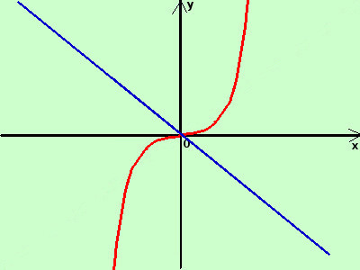
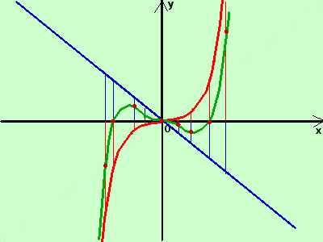

|
sviluppo Tracciare intuitivamente il grafico della seguente funzione scomponendola in opportuni addendi y = x3 - x
 la prima e' la parabola cubica (la disegno in rosso) la seconda e' la bisettrice del secondo e quarto quadrante (la disegno in blu) adesso sommo algebricamente in alcuni punti dell'asse x il valore delle due funzioni (in pratica sottraggo fra loro i segmenti verticali in blu ed i segmenti verticali in rosso sulla stessa ascissa) ottengo i punti (in marrone)
collego fra loro i punti trovati con una curva continua ed ottengo una rappresentazione intuitiva della mia funzione somma (la curva verde)  In caso di dubbio e' sempre possibile fare il calcolo algebricamente: ad esempio per il valore x=1/2 abbiamo che x3 vale 1/8 mentre -x vale -1/2 quindi avremo per y il valore 1/8-1/2 = -3/8 cioe' la curva passa per il punto (1/2;-3/8) Da notere che successivamente faremo lo studio di funzione e quindi troveremo il grafico in modo molto piu' preciso, pero' almeno cosi' abbiamo un'idea dell'andamento della funzione |